We built an R package to fit four types of stochastic differential equation (SDE) models on discrete-time observations. The four models considered in the package are: the Ornstein–Uhlenbeck (OU) model which is also called the Vasicek model in the literature, the modified OU model called the MOU model in this tutorial, the Cox–Ingersoll–Ross (CIR) model, , and the CEV or constant elasticity of variance model.Bayesian Markov Chain Monte Carlo (MCMC) methods are derived for parameter estimation where the positivity assumption imposed on some of the parameters can be satisfied simultaneously in the estimation process.
The motivation for creating this R package came from my former experience. The usual way to fit the interest rate models is to reorganize the discrete-time observations into a linear regression format and then fit a linear regression model. If the positivity assumption imposed on some of the parameters is not satisfied, they just discard the fitted model and fit another SDE model. Fitting a SDE model in this way is not quite correct. My opinion is that if you want to fit a model with postitivity assumption to some parameters, you have to consider it during the fitting process. You can not fit a model by ignoring the assumption first and then check the assumption after the model is fitted. This is why we propose using MCMC to fit these SDE models in which the assumption can be satisfied automatically in the estimation process.
To install the built package interRate, you need to have the package devtools available in your R or RStudio if you use RStudio as the IDE. Please use install.packages("devtools") to install it first. Then we install our package interRate.
devtools::install_github("zhongxianmen2020/interRate")## Skipping install of 'interRate' from a github remote, the SHA1 (cbeaf78a) has not changed since last install.
## Use `force = TRUE` to force installationIf you want to install interRate again, you need the following
devtools::install_github("zhongxianmen2020/interRate", force=TRUE)## Downloading GitHub repo zhongxianmen2020/interRate@HEAD##
## * checking for file 'C:\Users\zhongxian\AppData\Local\Temp\RtmpyULDU3\remotes2b683364e61\zhongxianmen2020-interRate-cbeaf78/DESCRIPTION' ... OK
## * preparing 'interRate':
## * checking DESCRIPTION meta-information ... OK
## * checking for LF line-endings in source and make files and shell scripts
## * checking for empty or unneeded directories
## Omitted 'LazyData' from DESCRIPTION
## * building 'interRate_0.1.0.tar.gz'
## ## Installing package into 'C:/Users/zhongxian/Documents/R/win-library/4.1'
## (as 'lib' is unspecified)Note Sometimes GitHub may delay your request and there will be an error. If this happens, please try again later.
Let \(r_t\) denote the observed interest rate at time \(t\), \(t\leq T\). The OU model is defined below.
\[ dr_{t}=(\alpha -\beta r_t) dt +\sigma dW_t, \] where \(\{W_t, t\geq0\}\) denotes the Wiener process, \(\beta>0\) and \(\sigma>0\). Define by \(\theta=(\alpha, \beta, \sigma)\) the vector of parameters of the OU model.
We assess the performance of the developed MCMC method for discrete OU model by simulation studies. We generate an artificial time series using the OU model with given parameter values. The generated data is then fitted by the derived MCMC estimation algorithm to see whether the estimation method can recover the true parameters used in the artificial data generation. The values of parameters used to generate artificial interest rate time series can be seen in the code below.
We need two libraries for artificial data generation.
set.seed(22)
N = 500
r = 1:N
r[1] = 0.0013875
alpha = 0.018
beta = 0.015
sigma = 0.012
for (i in 2:N){
r[i] = r[i-1] + alpha - beta*r[i-1] + sigma*rnorm(1, 0, 1)
}k = 1: length(r)
par(mfrow=c(1,1))
plot(k, r, type="l")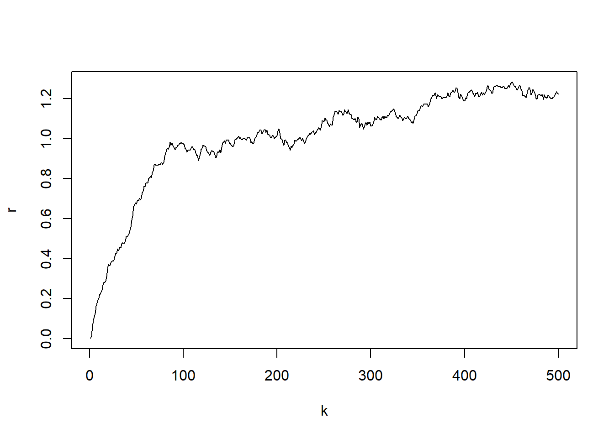
Now we fit the OU model to the artificially generated data set. We first load the built R package interRate.
library(interRate)
burn_in = 5000
N = 15000
model_fit = interRate(r, burn_in, N, "OU")After discarding the first burn_in of 5,000 sampled points, we use the 10,000 sampled points for parameter estimation. We plot the three sampled time series after the burn_in period.
ts_plot(model_fit$mcmc_series)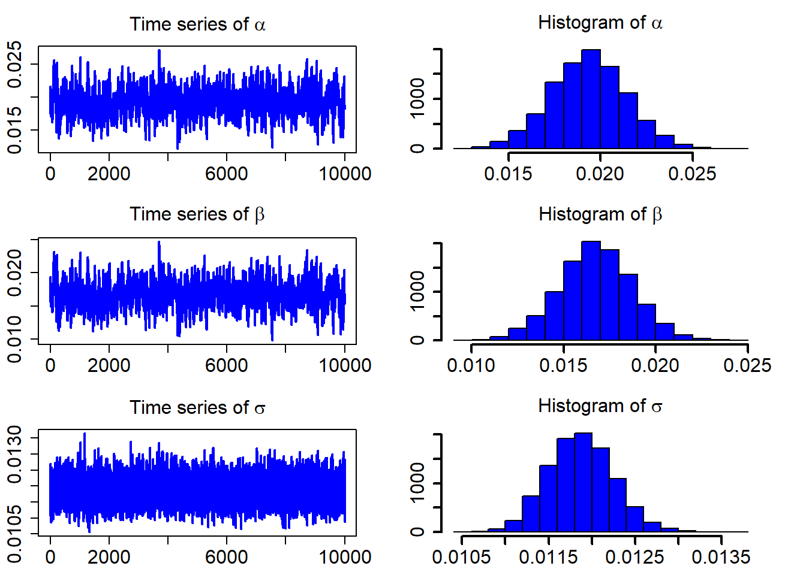
The following table contains the estimated parameters, the standard deviations, and the Bayesian confidence intervals.
model_fit$estimate## Est. Std. HPD CI(95%)_lower HPD CI(95%)_upper
## 1 0.01933546 0.0020653252 0.01517741 0.02337829
## 2 0.01675521 0.0019904958 0.01269524 0.02055154
## 3 0.01187326 0.0003793787 0.01113819 0.01260001For goodness-of-fit assessment of the estimated SDE models, there are a number of techniques that can be used. One of them is the Kolmogorov-Smirnov (K-S) test, which is often applied to assess whether the realized observation errors originated from the corresponding distribution follow a standard normal distribution.
The standardized residuals calculated using the formula below would follow a standard normal distribution.
\[ Residual_t =(r_t-(\hat{\alpha} -\hat{\beta} r_t))/\hat{\sigma}, \]
QQ_plot(model_fit$standard_residuals)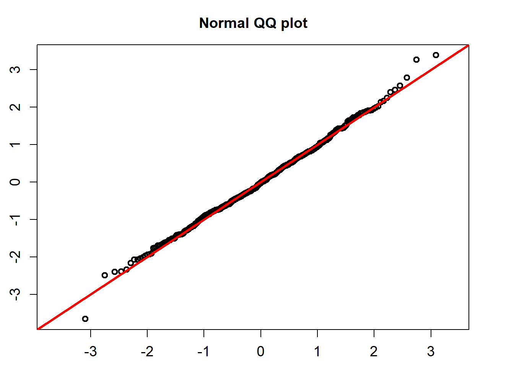
##
## One-sample Kolmogorov-Smirnov test
##
## data: ress
## D = 0.028598, p-value = 0.8091
## alternative hypothesis: two-sidedThe K-S test for the normality assumption shows that the p-value is 0.8091. So we can not reject the non hypothesis that the standardized residuals follow a univariate normal distribution.
Another approach is to assess the probability integra transforms (PITs)] obtained from fitted SDE models. If the fitted SDE model agrees with the data, the PITs will follow a uniform distribution \(U(0,1)\). Again, we use the K-S test to test the uniformality of the PITs.
Suppose that \(\{f(r_t|{\cal F}_{t-1})\}_{t=1}^{T}\) is a sequence of conditional densities of \(r_t\) and \(\{p(r_t|{\cal F}_{t-1})\}_{t=1}^{T}\) is the corresponding sequence of one-step-ahead density forecasts. The PIT of \(r_t\) is defined as
\[ u(t)=\int_{-\infty}^{r_t} p(z|{\cal F}_{t-1})dz. \]
Under the null hypothesis that the sequence \(\{p(r_t|{\cal F}_{t-1})\}_{t=1}^{T}\) coincides with \(\{f(r_t|{\cal F}_{t-1})\}_{t=1}^{T}\), the sequence \(\{u(t)\}_{t=1}^T\) corresponds to i.i.d. observations from the Uniform distribution \(U(0,1)\). For the OU model, the PITs can be calculated using the following formula.
\[ u(t)=\int_{-\infty}^{r_t}\frac{1}{\sqrt{2\pi}\sigma} \exp\bigg\{-\frac{(z-r_{t-1}-\alpha+\beta r_{t-1})^2}{2\sigma^2}\bigg\}dz\label{PitOne} \]
cdf_plot(model_fit$empir_cdf)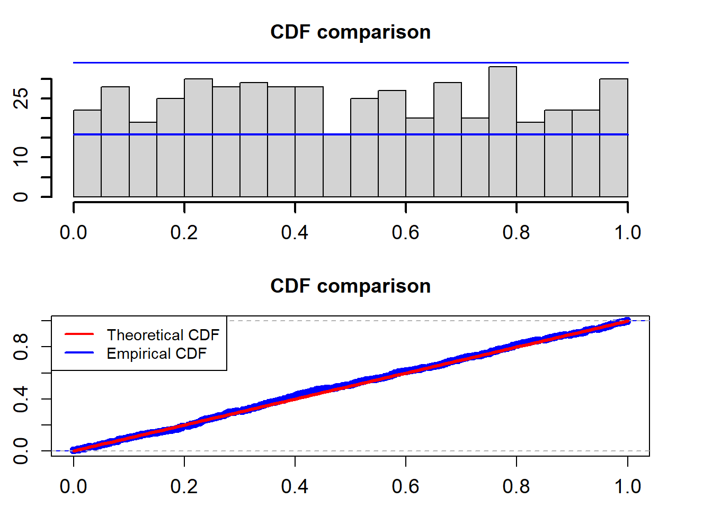
##
## One-sample Kolmogorov-Smirnov test
##
## data: model_cdf
## D = 0.029664, p-value = 0.7711
## alternative hypothesis: two-sidedThe two blue lines are the 95% confidence interval. The K-S test for the uniformality assumption shows that the p-value is 0.7711. So we can not reject the non hypothesis that the PITs calculated from the fitted Ou model based on the training data follow a uniform distribution in the interval (0,1).
As usual, we also give AIC and BIC of the fitted model to the data.
model_fit$Aic## [1] -3006.927model_fit$Bic## [1] -3000.502Let \(r_t\) denote the observed interest rate at time \(t\), \(t\leq T\). The MOU model is defined below.
\[ dr_{t}=(\alpha -\beta r_t) dt +\sigma r_t dW_t, \] where \(\{W_t, t\geq0\}\) denotes the Wiener process, \(\beta>0\) and \(\sigma>0\). Define by \(\theta=(\alpha, \beta, \sigma)\) the vector of parameters of the MOU model.
library(nimble)## nimble version 0.12.1 is loaded.
## For more information on NIMBLE and a User Manual,
## please visit https://R-nimble.org.##
## Attaching package: 'nimble'## The following object is masked from 'package:stats':
##
## simulatelibrary("HDInterval")
#library(latex2exp)
set.seed(22)
N = 500
r = 1:N
r[1] = 0.0013875
alphab = 0.018
beta = 0.015
sigma = 0.012
for (i in 2:N){
r[i] = r[i-1] + alpha - beta*r[i-1] +sigma*r[i-1]*rnorm(1, 0, 1)
}k = 1: length(r)
par(mfrow=c(1,1))
plot(k,r, type="l")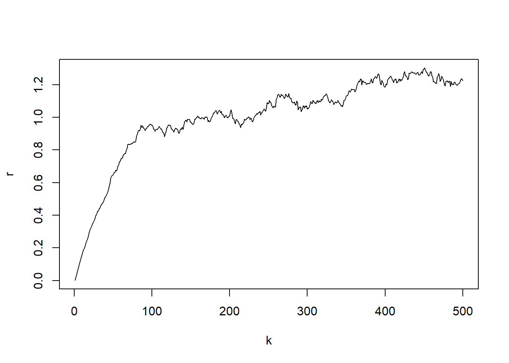
Now we fit the MOU model to the artificially generated data set.
library(interRate)
burn_in = 5000
N = 15000
model_fit = interRate(r, burn_in, N, "MOU")The following table contains the estimated parameters, the standard deviations, and the Bayesian confidence intervals.
model_fit$estimate## Est. Std. HPD CI(95%)_lower HPD CI(95%)_upper
## 1 0.01799608 1.625546e-05 0.01796303 0.01802709
## 2 0.01542245 5.333021e-04 0.01436339 0.01647043
## 3 0.01188201 3.797387e-04 0.01115356 0.01262440After discarding the first burn_in of 5,000 sampled points, we use the 10,000 sampled points for parameter estimation. We plot the three sampled time series after the burn_in period.
ts_plot(model_fit$mcmc_series)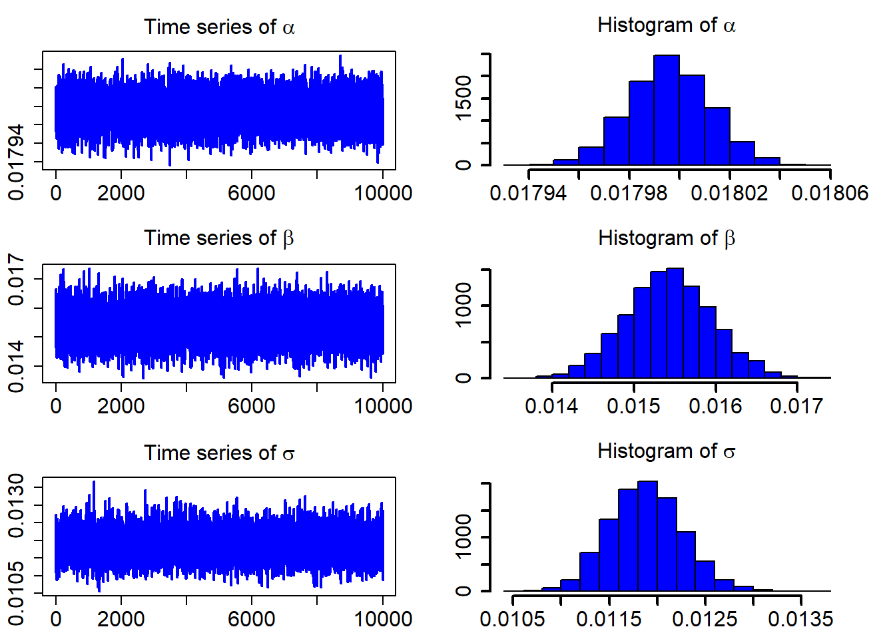
The standardized residuals calculated using the formula below would follow a standard normal distribution.
\[ Residual_t =(r_t-(\hat{\alpha} -\hat{\beta} r_t))/(\hat{\sigma} r_t), \]
QQ_plot(model_fit$standard_residuals)##
## One-sample Kolmogorov-Smirnov test
##
## data: ress
## D = 0.027343, p-value = 0.8497
## alternative hypothesis: two-sidedThe K-S test for the normality assumption shows that the p-value is 0.8497. So we can not reject the non hypothesis that the standardized residuals follow a univariate normal distribution.
Now, we look at the PITs for the estimated MOU model. \[ u(t)=\int_{-\infty}^{r_t}\frac{1}{\sqrt{2\pi}\sigma r_t} \exp\bigg\{-\frac{(z-r_{t-1}-\alpha+\beta r_{t-1})^2}{2\sigma^2 r_{t-1}^2}\bigg\}dz \]
cdf_plot(model_fit$empir_cdf)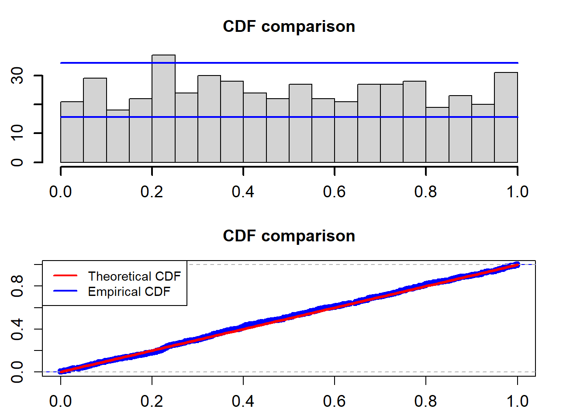
##
## One-sample Kolmogorov-Smirnov test
##
## data: model_cdf
## D = 0.028473, p-value = 0.8123
## alternative hypothesis: two-sidedThe two blue lines are the 95% confidence interval. The K-S test for the uniformality assumption shows that the p-value is 0.8123. So we can not reject the non hypothesis that the PITs calculated from the fitted Ou model based on the training data follow a uniform distribution in the interval (0,1).
As usual, we also give AIC and BIC of the fitted model to the data.
model_fit$Aic## [1] -3085.35model_fit$Bic## [1] -3078.925Let \(r_t\) denote the observed interest rate at time \(t\), \(t\leq T\). The CIR model is defined below.
\[ dr_{t}=(\alpha -\beta r_t) dt +\sigma \sqrt{r_t} dW_t, \] where \(\{W_t, t\geq0\}\) denotes the Wiener process, \(\alpha>0\), \(\beta>0\) and \(\sigma>0\). Define by \(\theta=(\alpha, \beta, \sigma)\) the vector of parameters of the CIR model. In order for the CIR model to generate positive values an additional condition \(2\alpha >\sigma^2\) has to be met.
library(nimble)
library("HDInterval")
#library(latex2exp)
set.seed(22)
N = 500
r = 1:N
r[1] = 0.0013875
alpha = 0.018
beta = 0.015
sigma = 0.012
for (i in 2:N){
r[i] = r[i-1] + alpha - beta*r[i-1] +sigma*sqrt(r[i-1])*rnorm(1, 0, 1)
}k = 1: length(r)
par(mfrow=c(1,1))
plot(k,r, type="l")Now we fit the MOU model to the artificially generated data set.
library(interRate)
burn_in = 5000
N = 15000
model_fit = interRate(r, burn_in, N, "CIR")The following table contains the estimated parameters, the standard deviations, and the Bayesian confidence intervals.
model_fit$estimate## Est. Std. HPD CI(95%)_lower HPD CI(95%)_upper
## 1 0.01817683 0.0003895953 0.01739399 0.01890623
## 2 0.01569573 0.0006565451 0.01446451 0.01703603
## 3 0.01187670 0.0003795695 0.01112435 0.01259369After discarding the first burn_in of 5,000 sampled points, we use the 10,000 sampled points for parameter estimation. We plot the three sampled time series after the burn_in period.
ts_plot(model_fit$mcmc_series)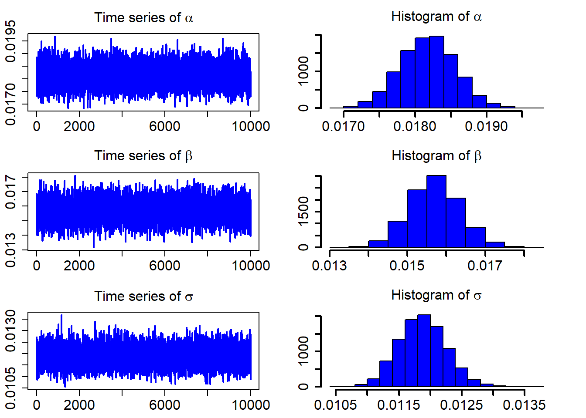
The standardized residuals calculated using the formula below would follow a standard normal distribution.
\[ Residual_t =(r_t-(\hat{\alpha} -\hat{\beta} r_t))/(\hat{\sigma} \sqrt{r_t}), \]
QQ_plot(model_fit$standard_residuals)##
## One-sample Kolmogorov-Smirnov test
##
## data: ress
## D = 0.025265, p-value = 0.9077
## alternative hypothesis: two-sidedThe K-S test for the normality assumption shows that the p-value is 0.9077. So we can not reject the non hypothesis that the standardized residuals follow a univariate normal distribution.
Now we fit the MOU model to the artificially generated data set.
\[ u(t)=\int_{-\infty}^{r_t}\frac{1}{\sqrt{2\pi r_t}\sigma} \exp\bigg\{-\frac{(z-r_{t-1}-\alpha+\beta r_{t-1})^2}{2\sigma^2 r_{t-1}}\bigg\}dz \]
cdf_plot(model_fit$empir_cdf)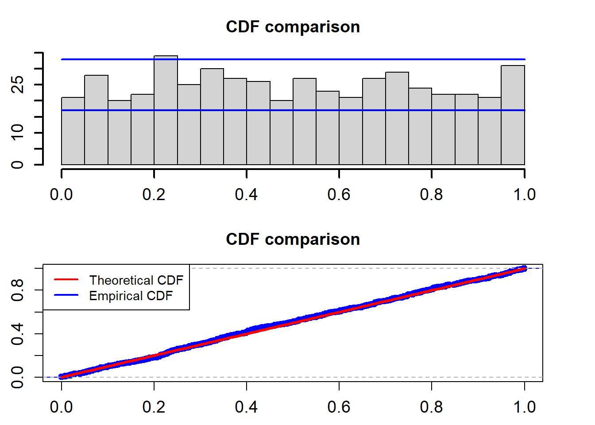
##
## One-sample Kolmogorov-Smirnov test
##
## data: model_cdf
## D = 0.026371, p-value = 0.8776
## alternative hypothesis: two-sidedThe two blue lines are the 95% confidence interval. The K-S test for the uniformality assumption shows that the p-value is 0.8776. So we can not reject the non hypothesis that the PITs calculated from the fitted Ou model based on the training data follow a uniform distribution in the interval (0,1).
As usual, we also give AIC and BIC of the fitted model to the data.
model_fit$Aic## [1] -3044.582model_fit$Bic## [1] -3038.157Let \(r_t\) denote the observed interest rate at time \(t\), \(t\leq T\). The CEV model is defined below.
\[ dr_{t}=(\alpha -\beta r_t) dt +\sigma r_t^{\gamma} dW_t, \] where \(\{W_t, t\geq0\}\) denotes the Wiener process, \(\beta>0\), \(\sigma>0\) and \(\gamma>0\). Define by \(\theta=(\alpha, \beta, \sigma, \gamma)\) the vector of parameters of the CEV model.
library(nimble)
library("HDInterval")
#library(latex2exp)
set.seed(22)
N = 500
r = 1:N
r[1] = 0.0013875
alpha = 0.018
beta = 0.015
sigma = 0.012
gamma1 = 0.75
for (i in 2:N){
r[i] = r[i-1] + alpha - beta*r[i-1] + sigma * r[i-1]^gamma1 * rnorm(1, 0, 1)
}k = 1: length(r)
par(mfrow=c(1,1))
plot(k,r, type="l")Now we fit the CEV model to the artificially generated data set.
library(interRate)
burn_in = 5000
N = 15000
model_fit = interRate(r, burn_in, N, "CEV")The following table contains the estimated parameters, the standard deviations, and the Bayesian confidence intervals.
model_fit$estimate## Est. Std. HPD CI(95%)_lower HPD CI(95%)_upper
## 1 0.01802878 0.0001799633 0.01767418 0.01839702
## 2 0.01554476 0.0005650349 0.01445982 0.01667657
## 3 0.01181250 0.0003732035 0.01108860 0.01255051
## 4 0.66354830 0.0723529508 0.52374109 0.79924273After discarding the first burn_in of 5,000 sampled points, we use the 10,000 sampled points for parameter estimation. We plot the three sampled time series after the burn_in period.
ts_plot(model_fit$mcmc_series)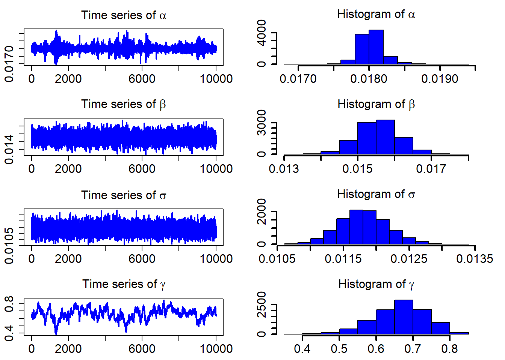
The standardized residuals calculated using the formula below would follow a standard normal distribution.
\[ Residual_t =(r_t-(\hat{\alpha} -\hat{\beta} r_t))/(\hat{\sigma} {y_t}^{\hat{\gamma}}), \]
QQ_plot(model_fit$standard_residuals)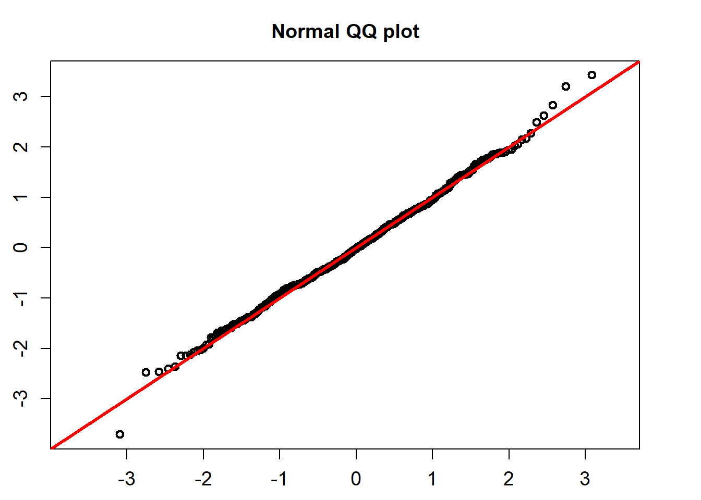
##
## One-sample Kolmogorov-Smirnov test
##
## data: ress
## D = 0.029413, p-value = 0.781
## alternative hypothesis: two-sidedThe K-S test for the normality assumption shows that the p-value is 0.781. So we can not reject the non hypothesis that the standardized residuals follow a univariate normal distribution.
\[ u(t)=\int_{-\infty}^{r_t}\frac{1}{\sqrt{2\pi r_t}\sigma} \exp\bigg\{-\frac{(z-r_{t-1}-\alpha+\beta r_{t-1})^2}{2\sigma^2 r_{t-1} r_{t-1}^{2\gamma}}\bigg\}dz \]
cdf_plot(model_fit$empir_cdf)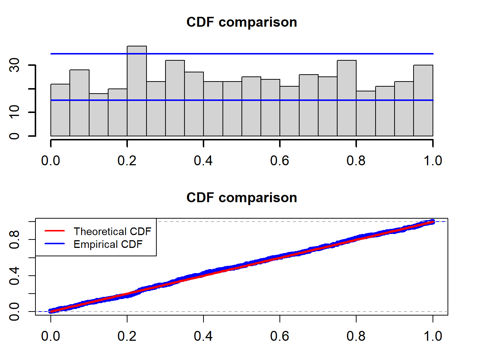
##
## One-sample Kolmogorov-Smirnov test
##
## data: model_cdf
## D = 0.027754, p-value = 0.8359
## alternative hypothesis: two-sidedThe two blue lines are the 95% confidence interval. The K-S test for the uniformality assumption shows that the p-value is 0.8359. So we can not reject the non hypothesis that the PITs calculated from the fitted Ou model based on the training data follow a uniform distribution in the interval (0,1).
As usual, we also give AIC and BIC of the fitted model to the data.
model_fit$Aic## [1] -3062.684model_fit$Bic## [1] -3058.259We have shown how to use the functions in the package interRate from model fitting to model assessment. Simulation studies shows us that the developed MCMC methods are able to recover the true parameters used in artificial data generation.
This version of the package is written in pure R language. To speed up the MCMC estimation process, we are planing to integrate C/C++ too.
We are also planing to write a package for Python in which the estimation process would be written in C/C++.
Sample \(\alpha\). The full conditional of \(\alpha\) is given by
\[ f(\alpha| {\bf r}, \theta_{-\alpha}) \propto \Pi_{t=2}^T\Bigg[ \exp \Bigg(-\frac{[r_t -r_{t-1} -\alpha +\beta r_{t-1}]^2}{2\sigma^2 }\Bigg)\Bigg]\notag\\ \propto \exp \Bigg(-\frac{1}{2}\bigg[\alpha^2\sum_{t=2}^T \frac{1}{\sigma^2 } - 2\alpha\sum_{t=2}^T \frac{r_t -r_{t-1} +\beta r_{t-1}}{\sigma^2 }\Bigg] \Bigg). \] where \(\theta_{-\alpha}\) is defined as the parameter vector \(\theta\) except \(\alpha\). So the full conditional of \(\alpha\) is a univariate normal distribution. \[ \alpha\sim N(a,b), \text{ with } a=\frac{d}{c}, b=\sqrt{\frac{1}{c}}, \text{where } c= \frac{T-1}{\sigma^2 } \text { and } d=\sum_{t=2}^T \frac{r_t -r_{t-1} +\beta r_{t-1}}{\sigma^2}. \]
Simulation of this full conditional is straightforward.
Sample \({\beta}\), \(\beta>0\). The full conditional of \(\beta\) is given by \[ f(\beta| {\bf r}, \theta_{-\beta}) \propto \Pi_{t=2}^T\Bigg[ \exp \Bigg(-\frac{[r_t -r_{t-1} -\alpha +\beta r_{t-1}]^2}{2\sigma^2 }\Bigg)\Bigg]\notag\\ \propto \exp \Bigg(-\frac{1}{2}\bigg[\beta^2\sum_{t=2}^T \frac{ r_{t-1}^2}{\sigma^2} - 2\beta\sum_{t=2}^T \frac{(-r_t +r_{t-1} +\alpha) r_{t-1}}{\sigma^2 }\Bigg] \Bigg). \] So the full conditional of \(\beta\) is a univariate normal distribution, \[ \beta\sim N\bigg(\frac{d_1}{c_1}, \sqrt{\frac{1}{c_1}}\bigg), \text{where } c_1=\sum_{t=2}^T \frac{ r_{t-1}^2}{\sigma^2} \text { and } d_1=\sum_{t=2}^T \frac{(-r_t +r_{t-1} +\alpha)r_{t-1}}{\sigma^2 }. \] Simulation of the full conditional of \(\beta\) is carried out by just sampling a univariate normal distribution truanted in the interval \((0, \infty)\). We propose to use the slice sampler introduced in Neal (2003) to simulate this full conditional.
Sample Sample \({\sigma^2}\). The full conditional of \(\sigma^2\) is given by \[ f(\sigma^2| {\bf r}, \theta_{-\sigma}) \propto (\sigma^2)^{-\frac{T-1}{2}}\Pi_{t=2}^T\Bigg[ \exp \Bigg(-\frac{[r_t -r_{t-1} -\alpha +\beta r_{t-1}]^2}{2\sigma^2 }\Bigg)\Bigg]\notag\\ = (\sigma^2)^{-\frac{T-1}{2}} \exp \Bigg(-\frac{\frac{1}{2}\sum_{t=2}^T[r_t -r_{t-1} -\alpha +\beta r_{t-1}]^2}{\sigma^2 } \Bigg). \] So the full conditional of \(\sigma^2\) is an Inverse Gamma distribution, \[ \sigma^2\sim IG\bigg(\frac{T-3}{2}, \delta\bigg), \text{where } \delta=\frac{1}{2}\sum_{t=2}^T[r_t -r_{t-1} -\alpha +\beta r_{t-1}]^2. \] We Simulate the full conditional of \(\sigma^2\) by simulating an Inverse Gamma distribution.
Please kindly let us zhongxianmen@hotmail.com know your comments and suggestions, so we can improve it in the next version.